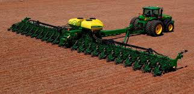

A agricultura
A agricultura é a raiz vital que sustenta nossa sociedade e nutre o mundo. Sem agricultura, não há sustento; é o elo essencial entre a terra e a mesa de todos.
são equipamentos especializados projetados para auxiliar nas atividades do campo, aumentando a eficiência e a produtividade da agricultura moderna. Aqui estão alguns pontos importantes sobre os maquinários agrícolas:

A agricultura é a raiz vital que sustenta nossa sociedade e nutre o mundo. Sem agricultura, não há sustento; é o elo essencial entre a terra e a mesa de todos.